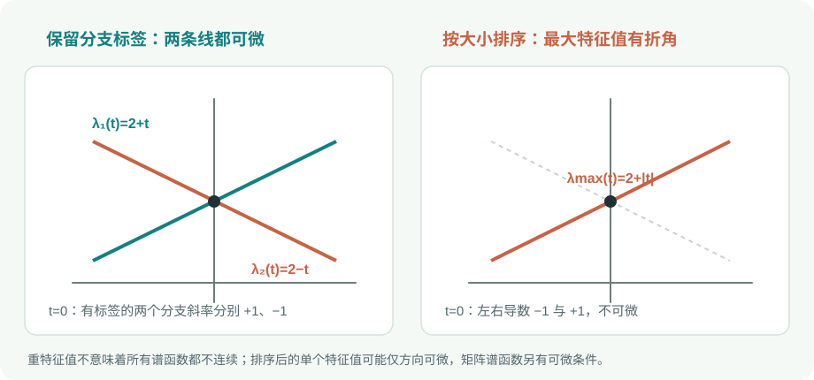
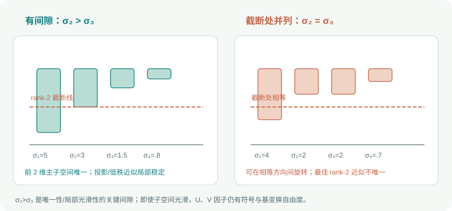

01 / 迹技巧：把微分整理成 Frobenius 内积
矩阵梯度的目标不是“把矩阵元素逐个求导”，而是找到一个与扰动同形的矩阵 G，使任意小扰动 E 都满足 df(X)[E]=tr(GᵀE)。迹的循环性质能把 E 移到统一位置，但只允许循环移位，不允许任意交换因子。
令 X∈R^{m×n}、A∈R^{p×m}、B∈R^{n×p}，则 f(X)=tr(AXB) 是标量。微分为 df=tr(A(dX)B)=tr(BA(dX))，因此梯度为 AᵀBᵀ，尺寸恰为 m×n。
再令 C∈R^{n×n}，g(X)=tr(XCXᵀ)。乘积法则给出 dg=tr(dX C Xᵀ + X C dXᵀ)，整理后得到 ∇g=X(C+Cᵀ)。只有当 C 对称时，才可进一步写成 2XC。

02 / Jacobi 公式：可逆时用逆矩阵，奇异时用伴随矩阵
行列式是矩阵元素的多项式，因此即使 A 奇异，det(A) 对 A 的微分仍然存在。对任意方阵 A 和扰动 E，始终成立的形式是 D det(A)[E]=tr(adj(A)E)，其中 adj(A) 是伴随矩阵。
当 A 可逆时，adj(A)=det(A)A⁻¹，才可改写为 d det(A)=det(A) tr(A⁻¹dA)。在 Frobenius 梯度约定下，∇det(A)=det(A)A⁻ᵀ。对实对称正定 A，∇ log det(A)=A⁻¹；对一般可逆实矩阵，应讨论 log|det A|，因为 log det A 未必是实数。
例：A=[[a,b],[c,d]]，则 det(A)=ad−bc，梯度矩阵为 [[d,−c],[−b,a]]。当 A 奇异时这个余子式矩阵仍然有效，而逆矩阵表达式失效。
03 / 特征值导数：简单根、重根与左右特征向量
若 A 是实对称矩阵，λ 是简单特征值，v 是单位特征向量，则沿任意对称扰动 E 的一阶变化是 vᵀEv。这个结果不需要先求导特征向量：将特征方程微分，再左乘 vᵀ，利用对称性即可消去 dv 项。
对一般可对角化的非对称矩阵，右特征向量 x 满足 Ax=λx，左特征向量 y 满足 y* A=λ y*。若归一化为 y*x=1，则简单特征值的一阶导数是 y*Ex；不能把非正规矩阵的左向量误当成右向量的转置。
重特征值处要区分“特征值分支”和“按大小排序的特征值”。若 λ 的对称特征子空间基为 V，重根在方向 E 下的一阶分裂由小矩阵 VᵀEV 的特征值决定；单个排序分支在交叉点一般不可 Fréchet 微分，但方向导数仍可讨论。矩阵函数或对称谱函数可能在相同位置仍然可微，不能笼统地把“重根”说成“所有谱函数都不连续”。
图中的 λmax(t)=2+|t| 是一个明确反例：它连续且方向可微，却在 t=0 没有双侧导数。对缺陷矩阵，特征值对扰动还可能出现平方根等分数次幂变化。
04 / 奇异值导数：简单正奇异值的公式
设 A(t) 可微，且 σ(t) 是一个简单且严格为正的奇异值，左右单位奇异向量满足 Av=σu、Aᵀu=σv。则沿矩阵扰动 E 的导数为 uᵀEv。复矩阵情形取实部 Re(u*Ev)。
当奇异值重复时，单独某一对奇异向量并不唯一，导数应在对应奇异子空间中处理；当奇异值为零时，上式不能被当成对奇异向量的普通光滑参数化。深度学习中的 SVD 反向传播出现极小奇异值差分母时，通常反映的是奇异向量/基底选择的病态，而不是所有与奇异值有关的标量函数都不可微。
对核范数 ‖A‖*=Σσᵢ(A)，在满秩且奇异值简单等更强条件下可以写出平滑梯度；一般秩亏或重奇异值情形要使用次梯度或光滑近似。MIT 18.065 的课程讲解把奇异值导数与核范数、矩阵补全放在同一条计算路径中。
05 / Daleckii–Krein：矩阵函数可微不等于特征向量可微
对实对称 A，设 A=QΛQᵀ，并令标量函数 f 在包含 A 全部特征值的区间上连续可微。矩阵函数 f(A)=Q f(Λ)Qᵀ 的 Fréchet 导数可以通过一阶差商矩阵逐元素乘上扰动表示。
当 λᵢ=λⱼ 时，差商用极限 f′(λᵢ) 定义。以 f(x)=x² 为例，Fᵢⱼ=λᵢ+λⱼ，因此导数化为 Df(A)[E]=AE+EA。这条公式解释了为什么对矩阵求导时通常不能把标量的 2x dx 直接照搬成 2A dA。
06 / 截断 SVD 的导数：截断处的谱间隙
把 A 写成奇异值降序的 SVD，rank-k 截断保留前 k 个奇异方向。若 σₖ>σₖ₊₁，截断处存在谱间隙，最佳 rank-k 近似是唯一的；被选中的左右奇异子空间也与未选子空间分离，因而可以局部平滑地跟踪。

需要区分三件事：矩阵 A 的奇异值、被选中的奇异子空间、某一种 SVD 因子表示。即使子空间随 A 平滑变化，单个奇异向量仍可因符号翻转而不连续；重复奇异值簇内部的基底还可任意正交旋转。因此在反向传播中，若任务只依赖投影矩阵或低秩重建，直接对齐不变子空间往往比追踪某一列 U/V 更稳妥。
07 / 复算：Jacobi、简单特征值与奇异值方向导数
import math
# A(t) = diag(2+t, 2-t): sorted lambda_max has a kink at t=0.
def lambda_max(t):
return max(2+t, 2-t)
h = 1e-6
left = (lambda_max(0)-lambda_max(-h))/h
right = (lambda_max(h)-lambda_max(0))/h
assert abs(left + 1) < 1e-8
assert abs(right - 1) < 1e-8
# A = diag(3, 1), top singular pair u=v=e1.
# Direction E = [[2, 4], [5, 7]] gives d sigma_1 = e1^T E e1 = 2.
A = ((3.0,0.0),(0.0,1.0))
E = ((2.0,4.0),(5.0,7.0))
def sigma_top(eps):
a,b = 3+eps*E[0][0], eps*E[0][1]
c,d = eps*E[1][0], 1+eps*E[1][1]
tr = a*a+b*b+c*c+d*d
det = (a*d-b*c)**2
disc = math.sqrt(max(0.0,tr*tr-4*det))
return math.sqrt((tr+disc)/2)
numeric = (sigma_top(1e-6)-sigma_top(-1e-6))/(2e-6)
assert abs(numeric-2.0) < 1e-5
# Jacobi: det([[a,b],[c,d]]) = ad-bc; gradient is the cofactor matrix.
a,b,c,d = 2.0,1.0,3.0,4.0
grad = ((d,-c),(-b,a))
assert grad == ((4.0,-3.0),(-1.0,2.0))
print("sorted-eigenvalue kink, singular-value derivative and Jacobi gradient verified")预期：排序后的最大特征值在交点左右斜率为 −1、+1；简单最大奇异值的数值中心差分接近 2；2×2 行列式的伴随梯度与余子式矩阵一致。
参考资料与进一步阅读
- MIT 18.S096：Matrix Calculus for Machine Learning and Beyond（课程笔记与特征问题）
- MIT 18.065 Lecture 16：Derivatives of Inverse and Singular Values
- Lewis (1996), Derivatives of Spectral Functions
- Tropp, Matrix Analysis notes：Daleckii–Krein formula
- Truncated SVD and uniqueness under a singular-value gap
这里的数值例子用于验证公式与边界条件；它们不是对任意矩阵或任意数据集的经验结论。